Logical Architect & Data-Driven Planner
사용자 Pain Point를 로직으로 해결하고,
Figma · 표준 가이드 문서화로 협업 효율을 극대화하는 서비스 기획자입니다.
LLM 기술 이해를 바탕으로 AI 교육 서비스의 UX 고도화에 기여하겠습니다.
2024.03 – 2024.06 · GCOO & Pluspot · 서비스 기획·BM 설계 총괄 / 팀장
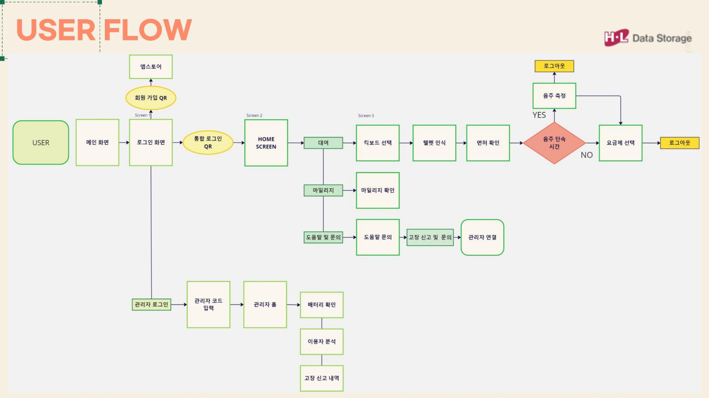
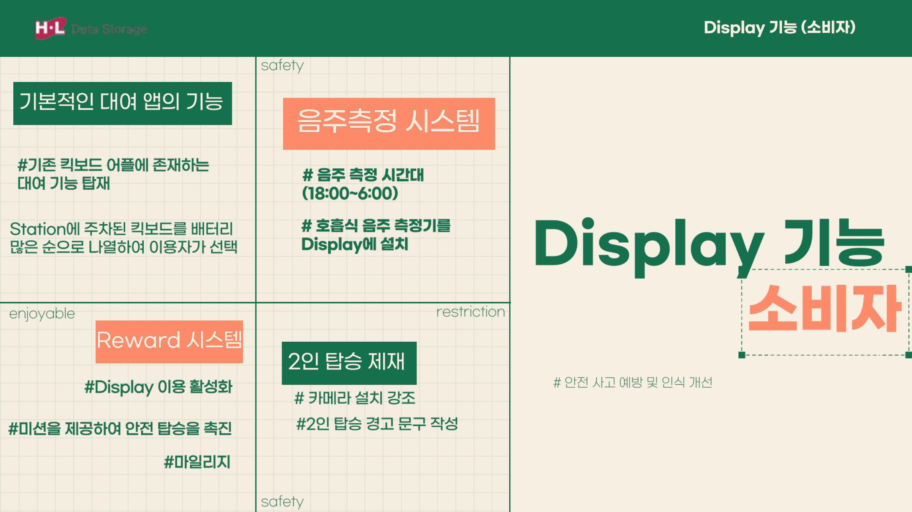
4단계 대여 흐름 전체를 Figma로 설계하고 UI 컴포넌트 표준 가이드를 수립.
선택 → 헬멧 인식(AI 안면인식) → 면허·음주 확인 → 요금 선택·대여 순서로 구성.
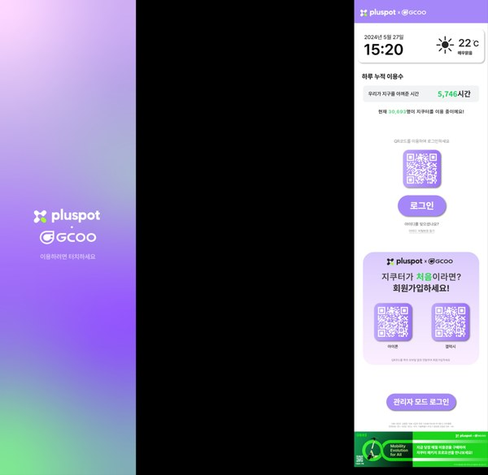
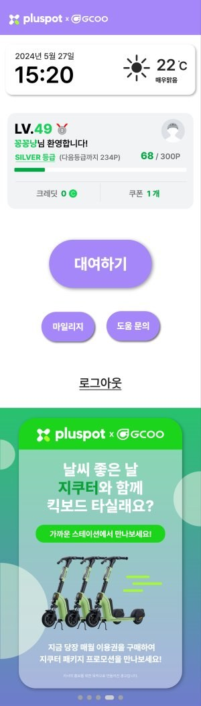
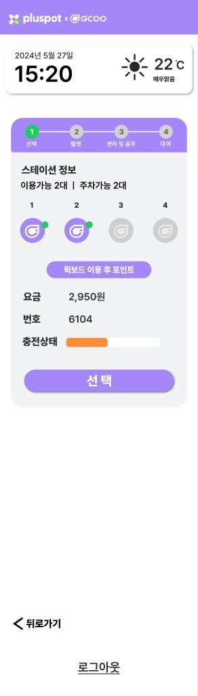
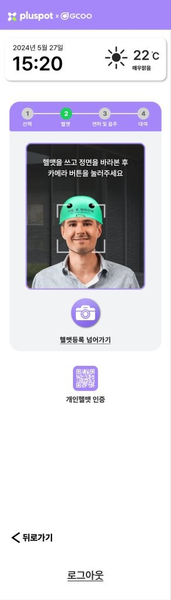
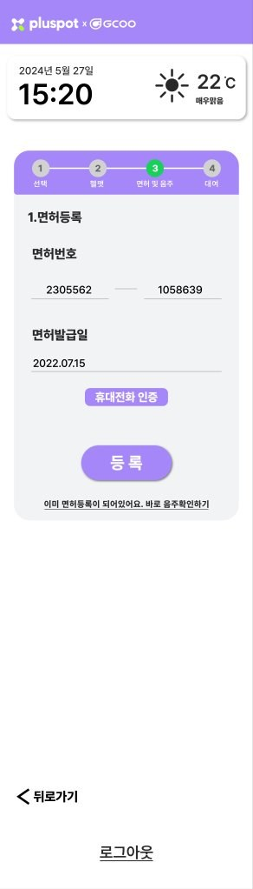
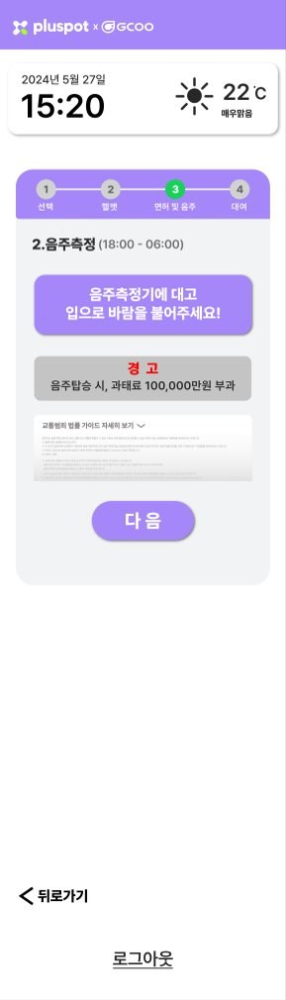
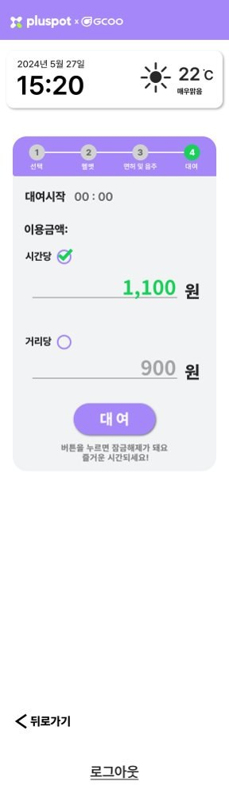
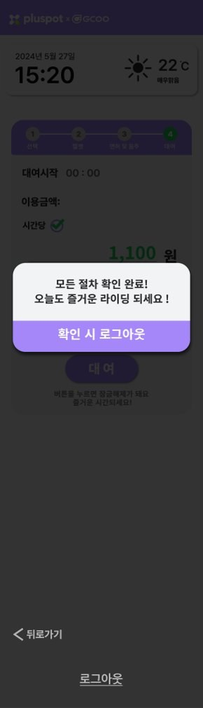
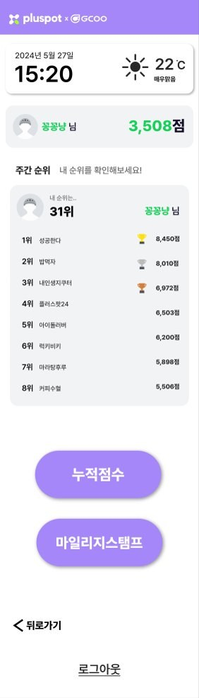
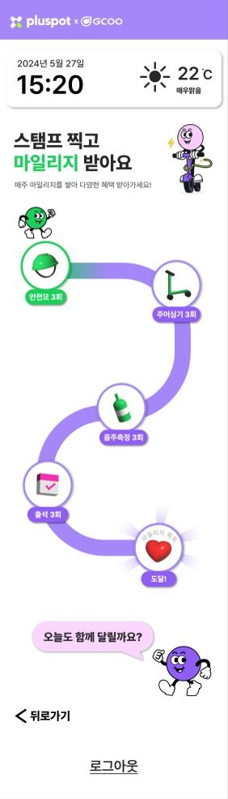
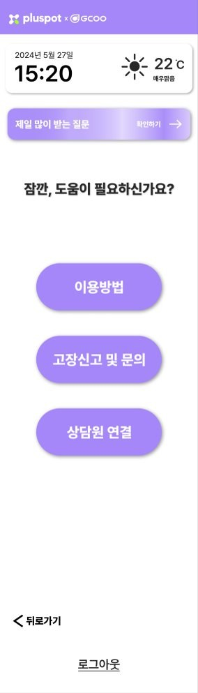
2025.08 – 2025.09 · VinoVision 팀 · 데이터 기반 상권 분석 · 기획 리드 · 발표자
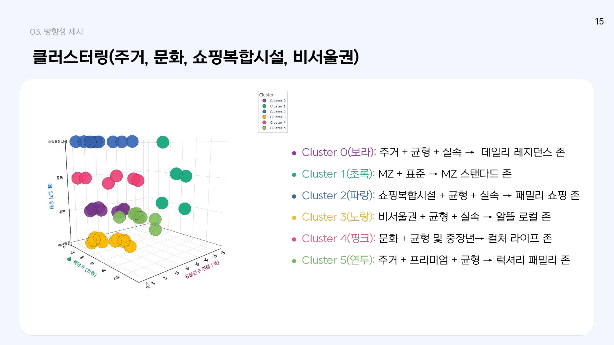
2024.08 · 미래와소프트웨어 AI 인공지능 활용 공모전 · 서비스 기획 · UX 라이팅 리드
메가스터디교육은 단순히 콘텐츠를 만드는 회사가 아닙니다.
AI 스마트매쓰의 오답 분석부터 미북(MiBuk) 생태계의 30여 개 출판사 연동까지,
데이터와 서비스 설계가 맞닿는 지점에서 실제 학습 경험을 개선하는 회사입니다.
기획서 검수 프로세스로 오탈자 0%를 유지하는 꼼꼼함,
표준 가이드로 팀의 효율을 높이는 협업자로서 함께 성장하겠습니다.